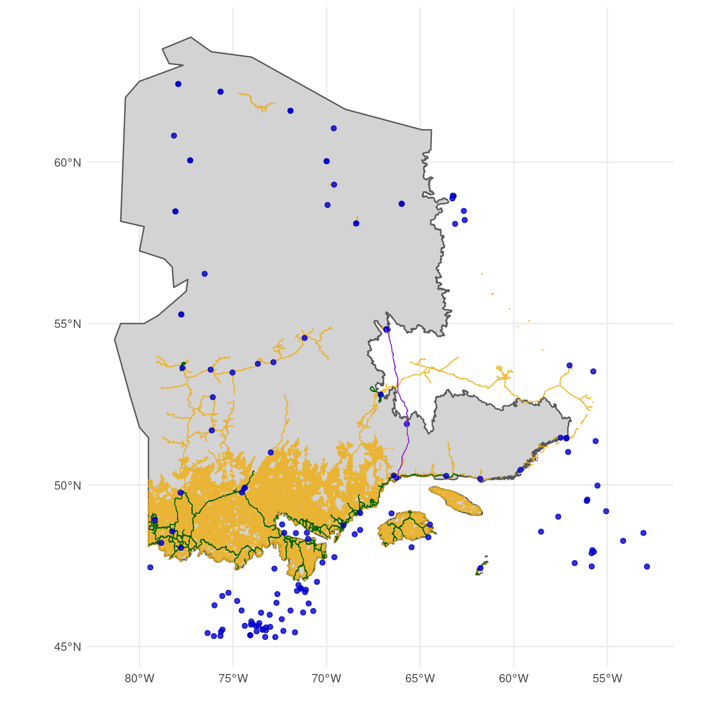

4 Cost information
In this section we define our approach to estimate the average access cost for each hexagon. We begin by describing the information layers used to define transport methods. We then define our approach to calculate the access cost for each hexagon, given the transport method and its respective parameters. Finally, we present the equations to calculate the inclusion probability given the average cost of access.
Transport layers and access cost
We used four layers of information to calculate the cheapest cost of access of a site: roads, trails, trains, and airports. Roads are used for truck transport and are mainly available in the southern part of the study area. Trails are available in more remote areas to be acessed by ATVs, but is relatively irrelevant given the amout of trails over the study area. Trails are used by ATVs to access remote areas, but their distribution overlaps with roads. For roads and trails, a buffer of size specified in Table 4.1 is defined around each line of access to create an accessible region by these methods of transport. The final access cost (AC) for a method of transport \(x\) is constant inside the buffer and is calculated as:
\[ AC_x = \frac{x_{cost\_per\_day} \times nb_{arus}}{x_{arus\_per\_crew\_per\_day}} \]
The parameters are defined in Table 4.1, \(x\) is either roads or trails. We then rasterized the road and trail buffer polygons to a 30-meter resolution raster to calualte the minimum cost of access for each pixel across the study area.
For transport by helicopter, we used the airport and train layers. Since train lines provide a source of fuel for the helicopters, they are classified as a pseudo-airport for the purposes of determining the cost of access. Among all airports from Quebec and Labrador, we filtered for airport classified as Aéroport, Héliport or Aérodrome. We also filtered for airports that have available fuel or were from either Hydro-Quebec or Administration Régionale Kativik.
Different from roads and trails, the cost of access using helicopters was calculated at the level of the hexagon as there was little variation within a hexagon. The first step was to calculate the distance between each hexagon centroid and the closest airport or train line. Given the distance between a hexagon \(h\) and the closest airport or train line, the average access cost by helicopter (ACH) was defined as follows:
\[ ACH_{h} = CS_{h} + CF_{h} + CB_{h} \]
Where \(CS\) is the cost of deplyoing the Autonomous recording unit (ARU) within a hexagon, \(CF\) is the cost of flying to the hexagon, and \(CB\) the cost of flying if base camp is needed. \(CS\) is calculated in function of the number of ARUs deployed in a hexagon, the time it takes to deploy an ARU, and the cost per hour of the helicopter:
\[ CS_h = nb_{ARUs} \times H_{ARU} \times CH_{ARU} \]
\[ H_{ARU} = \frac{helicopter_{hours\_flying\_within\_sa\_per\_day}}{helicopter_{crew\_size} \times helicopter_{aru\_per\_person\_per\_day}} \]
\[ CH_{ARU} = helicopter_{l\_per\_hour} \times C_{l} + helicopter_{cost\_per\_hour} \]
If the distance (\(d\)) between the hexagon and the nearest airport exceeds the range of the helicopter, additional flights will be necessary, increasing the cost per litre of fuel (\(C_l\)): \[ C_{l} = \begin{cases} helicopter_{airport\_cost\_per\_l} & \text{if } d < helicopter_{max\_km\_from\_base} \\ helicopter_{base\_cost\_per\_l} & \text{if } d < 2 \times helicopter_{max\_km\_from\_base} \\ helicopter_{2nd\_base\_cost\_per\_l} & \text{otherwise} \end{cases} \]
The cost of flying (\(CF\)) to the hexagon from an airport is two times the distance between them, multiplied by the cost per kilometre:
\[ CF_h = 2 \times d \times C_d \]
\[ C_d = \frac{CH_{ARU}}{helicopter_{relocation\_speed}} \]
In case a base camp is required due to the long distance of the hexagon, the parameter \(d\) from the equation above becomes the distance between the hexagon and the base camp. Then, the cost of flying from the airport to base camp (\(CB\)) is defined as:
\[ CB_h = d \times helicopter_{base\_setup\_cost\_per\_km} + \frac{2 \times d}{helicopter_{relocation\_speed} \times helicopter_{l\_per\_hour} \times C_l} \]
| Parameter | Value |
|---|---|
| nb_arus | 5 |
| truck_buffer | 1000 |
| truck_cost_per_day | 600 |
| truck_n_crews | 2 |
| truck_arus_per_crew_per_day | 5 |
| atv_buffer | 1000 |
| atv_cost_per_day | 1200 |
| atv_n_crews | 2 |
| atv_arus_per_crew_per_day | 3 |
| helicopter_cost_per_hour | 1250 |
| helicopter_max_km_from_base | 150 |
| helicopter_base_setup_cost_per_km | 9 |
| helicopter_l_per_hour | 160 |
| helicopter_crew_size | 4 |
| helicopter_aru_per_person_per_day | 5 |
| helicopter_relocation_speed | 180 |
| helicopter_airport_cost_per_l | 1.3 |
| helicopter_base_cost_per_l | 5 |
| helicopter_2nd_base_cost_per_l | 10 |
| helicopter_hours_flying_within_sa_per_day | 5 |
Inclusion probability
To compute the inclusion probability of a hexagon in function of its accessibility, we calculated a weighted access cost based on the proportions of each access method used in the hexagon. We used the raster with the minimum cost among roads and trails to estimate the proportion of the hexagon that is accessible by land. The rest of the hexagon that is not covered by the road and trail buffer is then only accessible by helicopter. Given all available methods of transport in a hexagon, the weighted average cost is defined as the sum of the cost of each of these methods, weighted by their proportion in the hexagon:
\[ W_{\text{averge cost}_{h}} = \frac{\sum_{i=1}^{n} w_{i}Cost_{i}}{\sum_{i=1}^{n} w_i} \]
Then, for a hexagon \(h\) and each method of transport \(i\), its cost inclusion probability \(P_{cost_{h}}\) is given by:
\[ P_{cost_{h}} = \frac{1}{\sqrt{W_{\text{averge cost}_{h}}}} \]
Where \(w_i\) is the weight given by the proportion of the hexagon accessible by the method \(i\).